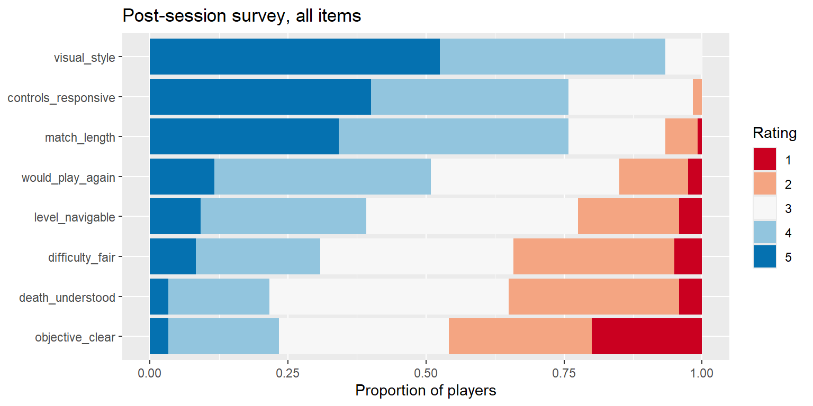

library(readr)
library(dplyr)
library(tidyr)
library(ggplot2)
sessions <- read_csv("data/tidebreak_sessions.csv", show_col_types = FALSE)
survey <- read_csv("data/tidebreak_survey.csv", show_col_types = FALSE)
dim(survey)[1] 120 9From a set of results to a finding someone can act on
Week 3, second cycle, for everyone, before Part B of Lab 03. It covers the last step of the analytical workflow: turning results into a report that another person can check and act on. It sets out the nine parts of a playtest report, introduces
pivot_longer()as the last stage of the R cycle you have not met, and works one finding through What → Pattern → Meaning → Action twice: once well, once badly, with the same numbers.
By the end of these notes you can:
pivot_longer() and summarise or plot every item in one step;A playtest ends in a decision: keep the change, cut it, or test again. The person making that decision will not rerun your analysis. They will read the report, and the report is the only part of your work that reaches them.
A report is an argument, not a results dump. Every table and figure you include should move the reader towards the conclusion or warn them off it. A reader faced with forty numbers will pick the one they already believed.
The reader must be able to check you. A report that says what was measured, how the data was cleaned, what was tested and what was not, lets a sceptical producer find the weak point themselves. That is what makes the conclusion trustworthy, and it is why the limitations section is not optional.
Every playtest report in this module uses the same nine parts, in this order. The order is the analytical workflow: question, then data, then evidence, then what it means.
| Part | Answers | In the Tidebreak report |
|---|---|---|
| 1. Research question | What did we want to know? | Did Build B’s guidance improve navigation without reducing enjoyment? |
| 2. Experimental design | Who played what, and how was the data cleaned? | 120 sessions, each player on one build; the cleaning log |
| 3. Descriptive evidence | What are the numbers? | Wrong turns per session: mean 8.9 in A, 5.5 in B |
| 4. Visual evidence | What does it look like? | The faceted histogram of wrong turns |
| 5. Statistical evidence | Could it be chance, and how big could it be? | The t-test and its confidence interval |
| 6. Practical significance | Is it big enough to matter? | Is the reduction in wrong turns worth the build’s cost? |
| 7. Qualitative evidence | What did players say? | The comment themes |
| 8. Limitations | What could make this wrong? | Sample, design, confounds, what was not measured |
| 9. Design conclusion | What do we do next? | A decision and the next test |
Parts 3 to 7 are evidence; parts 8 and 9 are judgement. Keep them separate. A reader should be able to disagree with your conclusion while agreeing with every number above it.
Part 8 is where confounds go. Anything from Relationships and Confounding that you could not rule out belongs here, stated plainly. A limitation you name costs you less than one the reader finds.
A survey tool exports one row per respondent and one column per question, because that is how a form is filled in. That shape is wide. The Tidebreak survey has 120 rows and 9 columns: a session ID and eight agreement items, each rated 1 to 5.
Tidy data has one row per observation, one column per variable. In the survey, an observation is one player’s answer to one item. So the tidy shape has three columns, session_id, item and rating, and one row per answer. That shape is long: 120 sessions × 8 items = 960 rows.
Why long matters. In the wide table, the item is a column name, and you cannot group by, filter on or plot a column name. In the long table, the item is a column value, so group_by(item) summarises every item at once, filter(item == ...) picks one, and ggplot2 can put every item on one axis. Eight separate calculations become one.
pivot_longer() is the reshape. It takes the columns you name, stacks them, and writes their old names into one new column and their values into another. It is the last stage of the R cycle, Tidy, and it is usually needed exactly when you want to report a whole questionnaire.
The comment column holds one sentence per session. Categorising comments means reading them, deciding on a handful of themes, and assigning each comment to one. It is a coding decision, like a cleaning decision, and it goes in the report.
Comments explain; they do not measure. A comment tells you what a player noticed and how they felt. It does not tell you how often something happened, and it can contradict the telemetry from the same session. When it does, the telemetry says what happened and the comment says how it felt. Both are true, and a report that reports only one of them has thrown evidence away.
Quote a comment to show a pattern, never to be the pattern. One vivid quote beside a chart of frustration quits makes the chart human. One vivid quote instead of the chart is an anecdote.
Every finding in the report is written in four moves:
| Move | Says | Test |
|---|---|---|
| What | What was measured, on whom, how many | Could a reader repeat the measurement? |
| Pattern | What the data shows, with its size | Is there a number, and is it the right one? |
| Meaning | What that suggests about the game, and how sure you are | Does it follow from the pattern, and no further? |
| Action | The one change or test you recommend | Could someone start work on it tomorrow? |
Meaning is where findings go wrong. What and Pattern are facts. Action is a recommendation. Meaning is the step where you connect them, and it is the step most often skipped, overstated or quietly replaced by what you hoped to find. A finding that does not name an action is not finished (rule 10); a finding whose action does not follow from its meaning is worse.
The data. The same 120 surveys, reshaped long and joined to the session outcomes, feed both examples below. Every number in both is correct.
What. 120 players each rated eight statements about their session from 1 (strongly disagree) to 5 (strongly agree).
Pattern. “I always knew what my objective was” was the lowest-rated of the eight, averaging 2.61, with 46% disagreeing. It split sharply by build: 2.13 in Build A against 3.08 in Build B. Players who quit in frustration rated it 1.24, against 2.97 for everyone else.
Meaning. Build B’s guidance made the objective clearer. The playtest was designed to compare the two builds, so this is the comparison it can best support. The link to frustration quits is an association: players who did not know what to do were the ones who left, which is consistent with unclear objectives causing the quits but does not prove it.
Action. Keep Build B’s guidance. For the next build, add an explicit on-screen objective in the first minute, and retest with objective clarity and the frustration-quit rate as the two target measures, with the success threshold agreed before the test.
Why it works. The What says who and how many. The Pattern gives the size and the comparison, not only the ranking. The Meaning separates the claim the design supports (the build changed clarity) from the one it only suggests (clarity drives quits). The Action is specific, testable, and follows from the Meaning.
Players loved Tidebreak: visual style scored 4.46 out of 5, with 93% agreeing. Build B scored higher than Build A on 5 of the 8 survey items. Overall the playtest was a success, and the team should continue as planned.
Why it fails. Every number is true, and the finding is still useless.
library(readr)
library(dplyr)
library(tidyr)
library(ggplot2)
sessions <- read_csv("data/tidebreak_sessions.csv", show_col_types = FALSE)
survey <- read_csv("data/tidebreak_survey.csv", show_col_types = FALSE)
dim(survey)[1] 120 9long <- survey |>
pivot_longer(-session_id, names_to = "item", values_to = "rating")
dim(long)[1] 960 3head(long, 3)# A tibble: 3 × 3
session_id item rating
<chr> <chr> <dbl>
1 S001 controls_responsive 3
2 S001 objective_clear 1
3 S001 difficulty_fair 3-session_id means “every column except session_id”. Those eight columns are stacked: their names go into item and their values into rating. The session ID is repeated on each of its eight rows, so nothing is lost.
long |>
group_by(item) |>
summarise(mean = mean(rating),
agree = mean(rating >= 4),
disagree = mean(rating <= 2)) |>
arrange(mean)# A tibble: 8 × 4
item mean agree disagree
<chr> <dbl> <dbl> <dbl>
1 objective_clear 2.61 0.233 0.458
2 death_understood 2.86 0.217 0.35
3 difficulty_fair 3 0.308 0.342
4 level_navigable 3.22 0.392 0.225
5 would_play_again 3.45 0.508 0.15
6 match_length 4.03 0.758 0.0667
7 controls_responsive 4.14 0.758 0.0167
8 visual_style 4.46 0.933 0 One group_by() summarises all eight items. mean(rating >= 4) is the proportion who agreed: TRUE counts as 1. For a rating scale, report the proportion agreeing and disagreeing alongside the mean; the mean of an ordinal scale is a convenience, not a measurement (rule 3).
round(prop.table(table(long$item, long$rating), margin = 1), 2)
1 2 3 4 5
controls_responsive 0.00 0.02 0.22 0.36 0.40
death_understood 0.04 0.31 0.43 0.18 0.03
difficulty_fair 0.05 0.29 0.35 0.22 0.08
level_navigable 0.04 0.18 0.38 0.30 0.09
match_length 0.01 0.06 0.17 0.42 0.34
objective_clear 0.20 0.26 0.31 0.20 0.03
visual_style 0.00 0.00 0.07 0.41 0.52
would_play_again 0.03 0.12 0.34 0.39 0.12table() counts each rating for each item; prop.table(..., margin = 1) turns each row into proportions that sum to 1. This is the full distribution of every item in one table.
long |>
ggplot(aes(y = reorder(item, rating), fill = factor(rating))) +
geom_bar(position = "fill") +
scale_fill_brewer(palette = "RdBu") +
labs(title = "Post-session survey, all items",
x = "Proportion of players", y = NULL, fill = "Rating")
Only possible because the data is long: item is a column, so it can go on an axis. reorder(item, rating) sorts the items by their mean rating, and position = "fill" stretches every bar to the same length so the items compare as proportions. The diverging palette puts disagreement in red and agreement in blue.
long |>
left_join(select(sessions, session_id, build), by = "session_id") |>
filter(item == "objective_clear") |>
group_by(build) |>
summarise(n = n(), mean = mean(rating), disagree = mean(rating <= 2))# A tibble: 2 × 4
build n mean disagree
<chr> <int> <dbl> <dbl>
1 A 60 2.13 0.617
2 B 60 3.08 0.3 left_join() from Week 2 adds each session’s build to all eight of its rows. The same pipeline with quit_reason in place of build gives the frustration-quit comparison in the good finding above.
themed <- sessions |>
mutate(theme = case_when(
grepl("lost|circles|meant to go|objective", comment) ~ "Lost or unclear",
grepl("route|exit|signposting", comment) ~ "Found the way",
grepl("Died|hard", comment) ~ "Difficulty",
TRUE ~ "General"
))
table(themed$theme, themed$build)
A B
Difficulty 19 16
Found the way 12 9
General 6 4
Lost or unclear 23 31grepl() returns TRUE when a comment contains any of the words, and case_when() assigns the first theme that matches. Read every comment before writing the patterns; the themes are your decision, and a reader should see them.
The table contradicts the telemetry. Build B players took fewer wrong turns, yet 31 of them left a “lost or unclear” comment against 23 in Build A, and 3 Build A players wrote that “the signposting helped” about the build without the new signage.
table(themed$theme, enjoyed = themed$enjoyment >= 5) enjoyed
FALSE TRUE
Difficulty 35 0
Found the way 0 21
General 0 10
Lost or unclear 54 0Split by enjoyment instead of build, the themes separate cleanly: every “found the way” comment came from a player who rated enjoyment 5 or above, and every “lost or unclear” comment from one who rated it lower. These comments record how the session felt, not where it went wrong. That is a finding in its own right, and it is why comments explain the numbers rather than replace them.
A playtest report is a .qmd file: prose, code and output in one document, rendered to HTML with quarto render report.qmd. The skeleton is the nine parts as headings:
---
title: "Tidebreak Build B: Playtest Report"
---
## 1. Research question
## 2. Experimental design
```{r}
#| echo: false
sessions <- readr::read_csv("data/tidebreak_sessions.csv", show_col_types = FALSE)
```
Each of the `r nrow(sessions)` sessions ...
## 3. Descriptive evidenceInline code keeps the prose honest. `r nrow(sessions)` in the text is replaced by the number when the report renders. When next week’s data arrives, you render again and every figure, table and sentence updates together. A number typed by hand into the prose is the one that will be wrong. Every page of this site is built this way.
echo: false hides a chunk’s code but keeps its output: the reader sees the table or figure without the R that made it. Use it for the report; leave the code visible in your own working file.
What the data shows. The objective item is the worst-rated of eight and differs most between the builds. The comment themes do not follow the build at all; they follow enjoyment.
What the analysis suggests. Build B’s guidance improved how clear the objective felt. The comments are a record of mood, so they are weak evidence about navigation in either direction.
What can legitimately be concluded. Build B made the objective clearer to the players who tested it. It did not make players say they got lost less, and a report that quoted only the comments would have reached the opposite conclusion to the telemetry.
Order the evidence by strength. In part 9, lead with the conclusion the strongest evidence supports, and name any weaker evidence that disagrees with it. A report that hides a contradiction invites the reader to find it.
Reporting results in the order you computed them. The reader needs the order of the argument. Use the nine parts.
Leading with the best-rated item. It is usually the art, it rarely differs between builds, and it is almost never what the playtest was run to find.
Averaging a rating scale and stopping. Give the proportion agreeing and disagreeing. A mean of 3 can be everyone neutral or half the players furious.
Counting comments as if they were measurements. A count of complaints is a theme, not a rate. Which comment a player writes depends on how they felt, not only on what happened to them.
An Action that is a sentiment. “Improve onboarding” is a wish. “Add an on-screen objective in the first minute and retest clarity” is an action.
Copying numbers into the prose by hand. They go stale the next time the data changes, and nobody notices until a meeting.
Each takes two or three minutes. Start from long, sessions and themed in the demonstrations.
1. Which survey item has the largest share of players answering 1 or 2 in Build A?
disagree_a <- long |>
left_join(select(sessions, session_id, build), by = "session_id") |>
filter(build == "A") |>
group_by(item) |>
summarise(disagree = mean(rating <= 2)) |>
arrange(desc(disagree))
head(disagree_a, 3)# A tibble: 3 × 2
item disagree
<chr> <dbl>
1 objective_clear 0.617
2 difficulty_fair 0.35
3 death_understood 0.283The objective item: 62% of Build A players answered 1 or 2, against 35% for the next item. Filtering after the join keeps the whole survey available for the next question.
2. Without running it, how many rows would pivot_longer() give if the survey had ten items instead of eight?
120 × 10 = 1200. One row per session per item. If a reshape gives a row count you did not predict, check which columns you told it to stack.
3. Among the frustration quits only, which comment theme is most common?
fr_themes <- table(themed$theme[themed$quit_reason == "Frustrated"])
fr_themes
Difficulty Found the way General Lost or unclear
12 2 2 9 Difficulty, with 12, ahead of lost or unclear with 9. The survey says frustration quitters did not know their objective; their comments mostly blame difficulty. Players name the symptom they felt, not the cause. Read the counts alongside what they are counts of: a handful of one-sentence comments, each chosen by how the session felt. They can illustrate why frustration quits happened. They cannot tell you how often each cause occurs.
pivot_longer() makes them long, so every item can be grouped, filtered, joined and plotted at once. That is the Tidy stage of the R cycle.